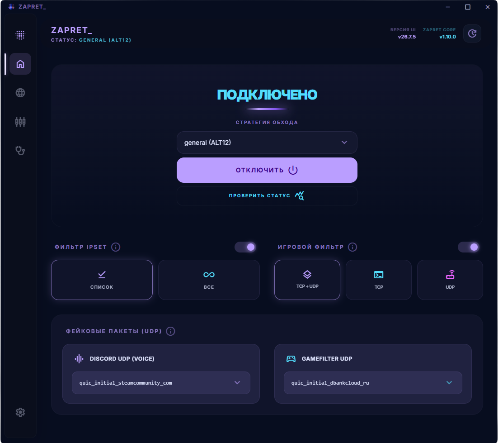

ZAPRET UI
Современный Zapret GUI
для Windows
Привычное приложение вместо BAT-файлов.
Выбирайте стратегию, обновляйте ядро и управляйте запуском в одном окне.
Windows 10 / 11 x64 Открытый код

Всё нужное.
В одном месте.
От первого запуска до обновления ядра — через понятный графический интерфейс.
-
Управление стратегиями
Выбирайте готовые стратегии Flowseal и переключайте их прямо в приложении.
-
Установка и обновление ядра
Загружайте стабильное ядро, обновляйте его и возвращайтесь к предыдущей версии с сохранением настроек.
-
Служба Windows
Запускайте стратегию как службу Windows или временно — чтобы проверить её работу в вашей сети.
-
Пользовательские списки
Добавляйте свои домены, исключения, IP-адреса и подсети во встроенном редакторе.
Несколько шагов —
и можно запускать.
Как установить ZAPRET UI
Скачайте приложение
Откройте последний релиз на GitHub, скачайте установщик из раздела Assets и установите приложение.
Установите ядро
Откройте ZAPRET UI и следуйте подсказкам первого запуска. Приложение предложит загрузить стабильное ядро.
Выберите стратегию
Проверьте её во временном режиме. Если всё работает, запускайте как службу Windows.
Для работы нужны права администратора, а для загрузки ядра — подключение к интернету.
Открытый код.
Открыт для вашего вклада.
ZAPRET UI — open-source проект под лицензией MIT.
Изучайте код, предлагайте улучшения и сообщайте об ошибках.